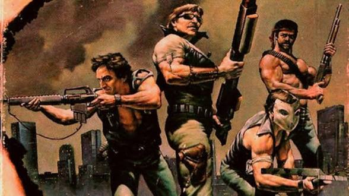

● HAZARD: P-1
🚨 THE ANNIHILATORS (1985) – MGC P-1

⛓️🦴🕯️🕸️🕷️ MGC BASEMENT COURT OF CONSENSUS
- ASSET TITLE: The Annihilators (1985) – The Official Veteran Vigilante Ledger
- OFFICIAL REGISTRY GRADE: Certified MGC P-1 (Basal State Floor)
- LOWER COURT JURISDICTION: Judge Tina, Chief Of Cult Classics
- CASE FILE: #027
📜 THE FORENSIC NARRATIVE BREAKDOWN & RECOVERY
Tina walks up 👢👢 to the steel bench, slaps 💃🏻 a generic beer can into the trash can 🗑️ and yells, “WHO’S BEEN DRINKING DOWN HERE IN MY BASEMENT COURT?!” as she examines the file. 🤬🔊
1. Worn-Out Exploitation Metallurgy & Repetitive Vigilante Trajectory
- Under a cold, disciplined forensic review, The Annihilators reveals immediate material fatigue and severe script exhaust across its layout. The film attempts to forge a high-velocity, street-level vigilante action profile centered on a squad of Vietnam veterans who reunite in Atlanta to clean up a neighborhood overrun by a ruthless street gang.
- While this blueprint carries an immense atmospheric vintage luster for collectors of mid-1980s low-budget cinema, the screenplay structure suffers from a flat, heavily circulated second-act bottleneck. The narrative logic experiences a severe slowdown, recycling predictable exploitation tropes that stall the continuous linear velocity of the movie before it can hit peak action.
2. Heavily Circulated Character Archetypes & Frictional Script Exhaust
- The execution represents a severely worn, moderately corroded specimen displaying sharp structural scuffs and unpolished surface drag. While the veteran squad tries to inject some street-level gritty cinema charisma, the character profiles are so heavily circulated they practically leak technical engine oil all over the basement floor! 🛢️⚙️
- Instead of a tightly calibrated, high-velocity thriller engine, the narrative drops straight into a repetitive loop—practically re-striking the same basic, predictable gang-confrontation story over and over again! Talk about a massive pacing scuff drag! The dialogue feels like it was written on a grease-stained napkin, forcing the powerhouse exploitation elements to work against a flat, uninspired script surface that completely clogs the continuous linear velocity of the asset.
3. Low-Grade Prop Metallurgy & The Uncalibrated Sound Matrix
- Under closer forensic inspection under our strict 5x magnifying lens, the film’s structural integrity completely disintegrates into comedy-tier scrap metal! The production expects the public consensus gallery to suspend all physical logic, actively asking us to believe that a standard pump-action shotgun is somehow functioning as a high-velocity flamethrower! Talk about a catastrophic bleed in the special effects arena!
- To top it all off, the narrative pacing is further deflated by a remarkably stupid laugh from the villain syndicate that echoes across the flat script surface, stalling the continuous linear velocity of the thriller. This hilarious, unpolished prop friction and scuffed sound presentation officially locks the asset right into the heavily circulated basement registers!
⚖️ ⚠️ THE MGC LOWER TRIBUNAL CONSENSUS WARNING
- Tina points her finger directly under the strict 5x magnifying lens, her emerald eyes flashing with absolute, high-velocity judicial focus!* 🔎
- Under our cold, objective tracking, we observe mainstream corporate critics attempting to push this exact specimen at a highly inflated 52% grade / Very Fine registry allocation! This is a classic false-grade marketing maneuver specifically designed to trick young viewers and casual speculators into buying into an asset that completely stalls out after 20 minutes! 🛑📉💰
- The MGC High Court refuses to play along with the promotional hyper-glow. We tell the absolute, unvarnished hard truth right out of the gate: if you are a dedicated historical low-budget exploitation film collector looking for raw, uncalibrated prop friction, go right ahead and mint this coin. But if you haven’t seen this film yet, consider yourself officially warned straight from the basement court floor! 🛢️⛓️❌
Tina grabs the wrench and brings it down with absolute, crushing velocity flat against the raw steel desk. 🔧💃🏻💥 Case Closed.

• © 2026 MOVIE GRADING CONSENSUS. All Sovereign Rights Reserved.